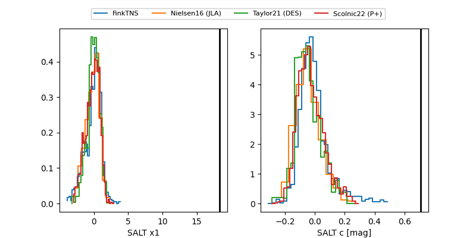

FINK: ZTF25abqmjvh
Lasair: ZTF25abqmjvh
ALeRCE: ZTF25abqmjvh
ZTF25abqmjvh (ztf,fink)
equatorial (ra, dec) = (341.0917,+24.56215)
galactic (l, b) = (89.3991,-29.91044)

last ztfg=20.41, ztfr=19.81
3 ztfg, 1 ztfr detections